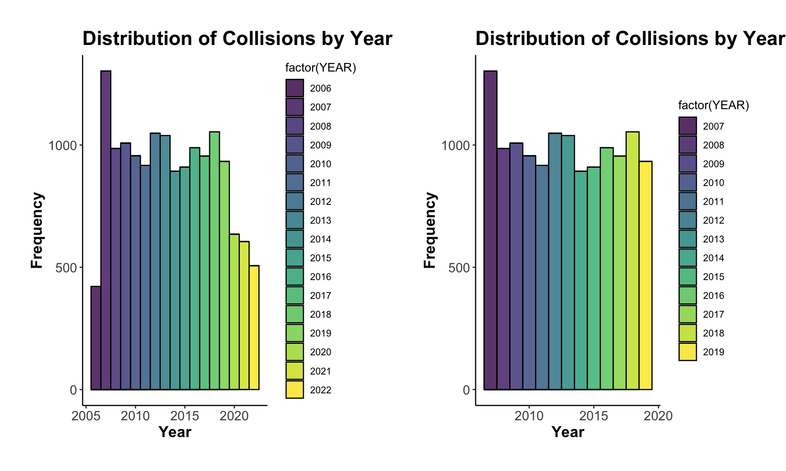
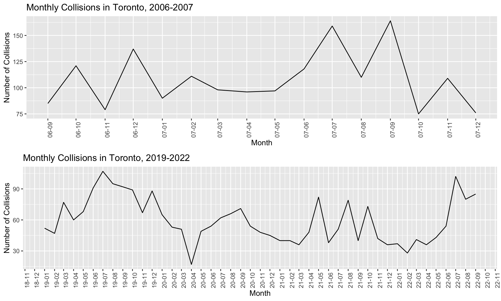

Traffic accidents are one of the leading causes of injury and death worldwide. Despite significant advances in transportation safety technology, road traffic accidents remain a serious public health concern. In Canada, traffic accidents result in thousands of injuries and fatalities each year, with many of these accidents occurring in the city of Toronto.
Toronto Police Service Open Data Portal offers a Traffic Collisions - Killed or Seriously Injured (KSI) Dataset, containing detailed information on all traffic collision events in Toronto from 2006 to 2021, where at least one person was either killed or seriously injured. This dataset provides comprehensive information that can help stakeholders gain a better understanding of the causes and consequences of traffic accidents in the city.
The purpose of this report is to investigate the factors that contribute to serious traffic accidents in Toronto. The analysis will focus on identifying the contributing factors to incidents resulting in death or serious injury, including demographic characteristics of drivers and victims, road conditions, and environmental factors. The findings of this report will help policymakers, transportation planners, and other stakeholders to develop effective policies and interventions aimed at reducing the incidence of serious traffic accidents.
| attributes.INDEX_ | attributes.ACCNUM | attributes.YEAR | attributes.DATE | attributes.TIME | attributes.STREET1 | attributes.STREET2 | attributes.OFFSET | attributes.ROAD_CLASS | attributes.DISTRICT | attributes.WARDNUM | attributes.LATITUDE | attributes.LONGITUDE | attributes.LOCCOORD | attributes.ACCLOC | attributes.TRAFFCTL | attributes.VISIBILITY | attributes.LIGHT | attributes.RDSFCOND | attributes.ACCLASS | attributes.IMPACTYPE | attributes.INVTYPE | attributes.INVAGE | attributes.INJURY | attributes.FATAL_NO | attributes.INITDIR | attributes.VEHTYPE | attributes.MANOEUVER | attributes.DRIVACT | attributes.DRIVCOND | attributes.PEDTYPE | attributes.PEDACT | attributes.PEDCOND | attributes.CYCLISTYPE | attributes.CYCACT | attributes.CYCCOND | attributes.PEDESTRIAN | attributes.CYCLIST | attributes.AUTOMOBILE | attributes.MOTORCYCLE | attributes.TRUCK | attributes.TRSN_CITY_VEH | attributes.EMERG_VEH | attributes.PASSENGER | attributes.SPEEDING | attributes.AG_DRIV | attributes.REDLIGHT | attributes.ALCOHOL | attributes.DISABILITY | attributes.HOOD_158 | attributes.NEIGHBOURHOOD_158 | attributes.HOOD_140 | attributes.NEIGHBOURHOOD_140 | attributes.DIVISION | attributes.ObjectId | geometry.x | geometry.y |
|---|---|---|---|---|---|---|---|---|---|---|---|---|---|---|---|---|---|---|---|---|---|---|---|---|---|---|---|---|---|---|---|---|---|---|---|---|---|---|---|---|---|---|---|---|---|---|---|---|---|---|---|---|---|---|---|---|
| 3490422 | 930852 | 2006 | 1.159675e+12 | 1540 | BIRCHMOUNT RD | EGLINTON AVE E | NA | Major Arterial | Scarborough | 21 | 43.73215 | -79.27859 | Mid-Block | NA | No Control | Clear | Daylight | Dry | Non-Fatal Injury | Rear End | Driver | 85 to 89 | None | NA | North | Automobile, Station Wagon | Slowing or Stopping | Driving Properly | Normal | NA | NA | NA | NA | NA | NA | NA | NA | Yes | NA | NA | NA | NA | Yes | NA | NA | NA | NA | NA | 125 | Ionview | 125 | Ionview (125) | D41 | 1001 | -8825252 | 5424084 |
| 3519703 | 941871 | 2006 | 1.164172e+12 | 1615 | DUFFERIN ST | MELBOURNE AVE | NA | Minor Arterial | Toronto and East York | 410 | 43.64055 | -79.42799 | Intersection | NA | Pedestrian Crossover | Clear | Daylight | Dry | Non-Fatal Injury | Pedestrian Collisions | Driver | 30 to 34 | None | NA | South | Other | Going Ahead | Failed to Yield Right of Way | Normal | NA | NA | NA | NA | NA | NA | Yes | NA | NA | NA | NA | NA | NA | NA | NA | Yes | NA | NA | NA | 85 | South Parkdale | 85 | South Parkdale (85) | D14 | 1002 | -8841883 | 5409983 |
| 3519704 | 941871 | 2006 | 1.164172e+12 | 1615 | DUFFERIN ST | MELBOURNE AVE | NA | Minor Arterial | Toronto and East York | 410 | 43.64055 | -79.42799 | Intersection | NA | Pedestrian Crossover | Clear | Daylight | Dry | Non-Fatal Injury | Pedestrian Collisions | Pedestrian | 40 to 44 | Major | NA | East | Other | NA | NA | NA | Pedestrian hit a PXO/ped. Mid-block signal | Crossing, Pedestrian Crossover | Medical or Physical Disability | NA | NA | NA | Yes | NA | NA | NA | NA | NA | NA | NA | NA | Yes | NA | NA | NA | 85 | South Parkdale | 85 | South Parkdale (85) | D14 | 1003 | -8841883 | 5409983 |
| 3522002 | 942726 | 2006 | 1.164172e+12 | 2102 | DUFFERIN St | LINDSEY Ave | NA | Major Arterial | Toronto and East York | 9 | 43.65355 | -79.43299 | Intersection | NA | No Control | Clear | Dark | Dry | Non-Fatal Injury | Rear End | Driver | 50 to 54 | Minimal | NA | South | Automobile, Station Wagon | Stopped | Driving Properly | Normal | NA | NA | NA | NA | NA | NA | NA | NA | Yes | NA | NA | NA | NA | NA | NA | Yes | NA | NA | NA | 83 | Dufferin Grove | 83 | Dufferin Grove (83) | D11 | 1004 | -8842440 | 5411983 |
| 3522003 | 942726 | 2006 | 1.164172e+12 | 2102 | DUFFERIN St | LINDSEY Ave | NA | Major Arterial | Toronto and East York | 9 | 43.65355 | -79.43299 | Intersection | NA | No Control | Clear | Dark | Dry | Non-Fatal Injury | Rear End | Driver | 40 to 44 | None | NA | South | Automobile, Station Wagon | Going Ahead | Following too Close | Normal | NA | NA | NA | NA | NA | NA | NA | NA | Yes | NA | NA | NA | NA | NA | NA | Yes | NA | NA | NA | 83 | Dufferin Grove | 83 | Dufferin Grove (83) | D11 | 1005 | -8842440 | 5411983 |
| 3522004 | 942726 | 2006 | 1.164172e+12 | 2102 | DUFFERIN St | LINDSEY Ave | NA | Major Arterial | Toronto and East York | 9 | 43.65355 | -79.43299 | Intersection | NA | No Control | Clear | Dark | Dry | Non-Fatal Injury | Rear End | Driver | 35 to 39 | Major | NA | South | Automobile, Station Wagon | Stopped | Driving Properly | Normal | NA | NA | NA | NA | NA | NA | NA | NA | Yes | NA | NA | NA | NA | NA | NA | Yes | NA | NA | NA | 83 | Dufferin Grove | 83 | Dufferin Grove (83) | D11 | 1006 | -8842440 | 5411983 |
| 3519357 | 941748 | 2006 | 1.164258e+12 | 1352 | FINCH AVE W | ISLINGTON AVE | NA | Major Arterial | Etobicoke York | 17 | 43.74625 | -79.56859 | Intersection | At Intersection | Traffic Signal | Clear | Daylight | Dry | Non-Fatal Injury | Turning Movement | Driver | 60 to 64 | Major | NA | East | Automobile, Station Wagon | Turning Left | Improper Turn | Normal | NA | NA | NA | NA | NA | NA | NA | NA | Yes | NA | NA | NA | NA | Yes | NA | NA | NA | NA | NA | 22 | Humbermede | 22 | Humbermede (22) | D31 | 1007 | -8857535 | 5426257 |
In this study, data cleaning and wrangling are conducted to ensure the accuracy and consistency of the data. First, 11 columns of the KSI dataset are selected based on their potential influence on traffic accidents, including factors such as location, road conditions, and driver behavior. To facilitate analysis and interpretation, columns are renamed with more descriptive names.
One issue identified during the data cleaning process was the date
column, which was recorded in Unix time. To make
the data more accessible and understandable, the date column is
converted to a year/month/day hour:minute format with the help of the
lubridate package.
Another issue identified during the data cleaning process was the use
of NA values in the SPEEDING and ALCOHOL columns to
indicate that the driver was not speeding or driving under the
influence. To ensure consistency and avoid potential confusion, these NA
values are replaced with boolean values (TRUE and
FALSE) to indicate whether or not these factors were
involved in the collision.
Finally, due to the relatively small number of incomplete observations, it was decided to remove any observation with missing data. The resulting cleaned dataset contains 11,734 observations, all of which have complete data. This ensures that the analysis conducted on this dataset is reliable and accurate. Table 2 shows the first 10 rows of the cleaned data.
| ID | YEAR | DATE | ROAD_CLASS | LATITUDE | LONGITUDE | WEATHER | ROAD_CONDITION | INJURY | SPEEDING | ALCOHOL |
|---|---|---|---|---|---|---|---|---|---|---|
| 3490422 | 2006 | 2006-10-01 04:00 | Major Arterial | 43.73215 | -79.27859 | Clear | Dry | None | FALSE | FALSE |
| 3519703 | 2006 | 2006-11-22 05:00 | Minor Arterial | 43.64055 | -79.42799 | Clear | Dry | None | FALSE | FALSE |
| 3519704 | 2006 | 2006-11-22 05:00 | Minor Arterial | 43.64055 | -79.42799 | Clear | Dry | Major | FALSE | FALSE |
| 3522002 | 2006 | 2006-11-22 05:00 | Major Arterial | 43.65355 | -79.43299 | Clear | Dry | Minimal | FALSE | FALSE |
| 3522003 | 2006 | 2006-11-22 05:00 | Major Arterial | 43.65355 | -79.43299 | Clear | Dry | None | FALSE | FALSE |
| 3522004 | 2006 | 2006-11-22 05:00 | Major Arterial | 43.65355 | -79.43299 | Clear | Dry | Major | FALSE | FALSE |
| 3519357 | 2006 | 2006-11-23 05:00 | Major Arterial | 43.74625 | -79.56859 | Clear | Dry | Major | FALSE | FALSE |
| 3519358 | 2006 | 2006-11-23 05:00 | Major Arterial | 43.74625 | -79.56859 | Clear | Dry | None | FALSE | FALSE |
| 3490423 | 2006 | 2006-10-01 04:00 | Major Arterial | 43.73215 | -79.27859 | Clear | Dry | None | FALSE | FALSE |
| 3519359 | 2006 | 2006-11-23 05:00 | Major Arterial | 43.74625 | -79.56859 | Clear | Dry | Minimal | FALSE | FALSE |
| ID | YEAR | LATITUDE | LONGITUDE | |
|---|---|---|---|---|
| Min. : 3470108 | Min. :2006 | Min. :43.59 | Min. :-79.64 | |
| 1st Qu.: 6105226 | 1st Qu.:2010 | 1st Qu.:43.66 | 1st Qu.:-79.47 | |
| Median : 8000017 | Median :2013 | Median :43.70 | Median :-79.40 | |
| Mean :43133801 | Mean :2014 | Mean :43.71 | Mean :-79.40 | |
| 3rd Qu.:80917314 | 3rd Qu.:2017 | 3rd Qu.:43.76 | 3rd Qu.:-79.32 | |
| Max. :81705465 | Max. :2022 | Max. :43.86 | Max. :-79.12 |
Moving on, I create a bar plot to show the distribution of collisions over the years. From the plot, I observe that the number of KSIs per year decreases as the year increases, except for 2006 where there was a lower number of KSIs compared to the other years. And the number of traffic accidents decreases rapidly from 2020 to 2022.

So I plotted the number of traffic accidents from 2006 to 2007 and 2019 to 2022 to figure out why the above happens. It turns out that the data for 2006 and 2022 are not complete, the dataset only records data after September 2006 and before October 2022. And I suspect that the data for 2020 and 2021 are not representative since they are affected by Covid-19. Since time of the year is potentially associated with traffic accidents, so I decided to use only the data between 2007 and 2019 for the analysis.

Overall, the analysis gives me confidence that the data is now clean and accurate. By identifying and addressing any potential anomalies or biases, I am able to ensure the validity and reliability of the analysis. The dataset contains a total of 12,991 observations, providing us with sufficient data to draw inferences about the factors that contribute to the incidence of severe traffic accidents in Toronto.
Copyright © 2023. Runshi Yang.